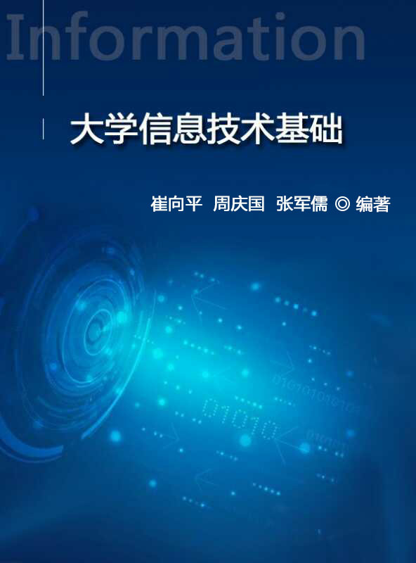

精选课程
信息技术基础
课程简介
本书将理论与实践相结合，从计算机基础知识讲起，并与时俱进，积极展现计算机相关领域的最新成果，考虑到非计算机专业学生的工作、学习以及日常需求，结合基础知识，详细讲解了常用且版本较新的工具软件的使用。融入计算思维，使学生能够更深入、更系统地了解计算机科学中的概念、原理、技术和解决问题的方法，能够在较高层次上利用计算机处理问题。

本书将理论与实践相结合，从计算机基础知识讲起，并与时俱进，积极展现计算机相关领域的最新成果，考虑到非计算机专业学生的工作、学习以及日常需求，结合基础知识，详细讲解了常用且版本较新的工具软件的使用。融入计算思维，使学生能够更深入、更系统地了解计算机科学中的概念、原理、技术和解决问题的方法，能够在较高层次上利用计算机处理问题。
